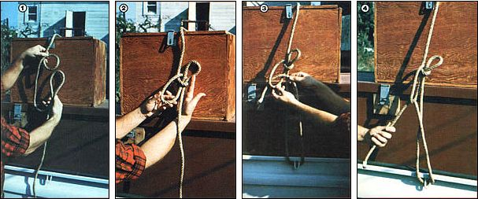

Here is a handy rope tie that ever load-toting individual can use:
If you've read "How to Tie the Ten Most Useful Knots" (MOTHER NO. 57, page 80) and "The Forgotten Zeppelin Knot" (MOTHER NO. 61, page 70), you already know eleven useful binders. Well, I'm going to add one more piece of rope lore to the collection . . . and my contribution is about the most useful knot ever devised for securing a load on a car roof or pickup bed.
I'm talking about the Dutchman's Knot (also called the Rope Tackle ). I learned the hitch on a lumberyard job . . . when an old hand who noticed my unskilled tying attempts kindly pulled me aside and "showed me the ropes". I've since found that the Dutchman isn't widely known to folks outside such hauling businesses. As far as I'm concerned, though, no one who ever has to drive off with a load of furniture, boxes, luggage, hay bales - or most anything that needs "mooring" - should be without knowledge of the practical fastener.
Most folks, you see, are content to simply throw a rope over their totings and feebly secure the line with a couple of half hitches. But all too often a person who uses such a hard-to-tighten rope arrangement finds that the load shifts a bit as it travels, causing the rope to loosen. After a few miles on the road, that cord is likely to be flapping in the breeze . . . while the precious cargo is on the verge of spilling all over the highway!
You won't risk such a calamity if you use the Dutchman, however, because the handy knot lets you cinch the rope tightly. What's the holding secret of this freight fixer? Simple . . . the Dutchman fixes a loop in the main line that acts as a pulley or "come-along". When you thread the bitter end of your rope back up (from its mooring point) through this loop, and then haul down on the line, you gain a pulling advantage of nearly two to one . . . and are able to secure your rope almost twice as snugly as could be done without the "pulley" effect.
In fact, the force-multiplying hitch is so effective that you should always be sure to use a strong rope when you tie the Dutchman. Otherwise, your line may snap when you try to tighten it up!
EDITOR'S NOTE: For information on how to order the back issues of THE Mother Earth News (restricted) mentioned in this article, turn to page 148.
|
 Photos by the Author Pass a ""horseshoe bend"" up through an in-line loop (that's been formed with the rope's bitter end on top) . . . as shown in Photos 1 and 2. Then run the free rope end around your mooring (Photo 3), ""tighten 'er down"" (Photo 4), and finish off the knot with half hitches |
|
|